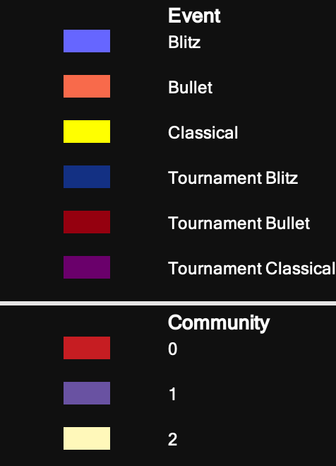
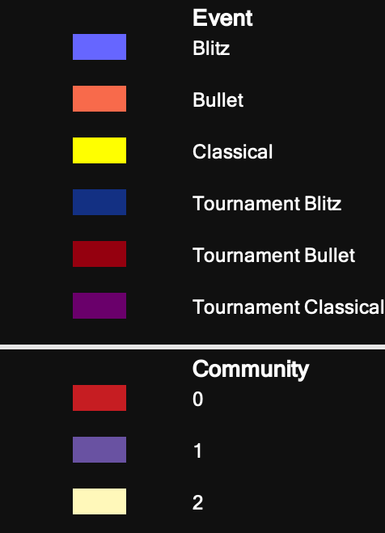
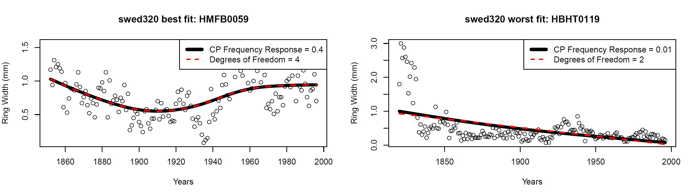
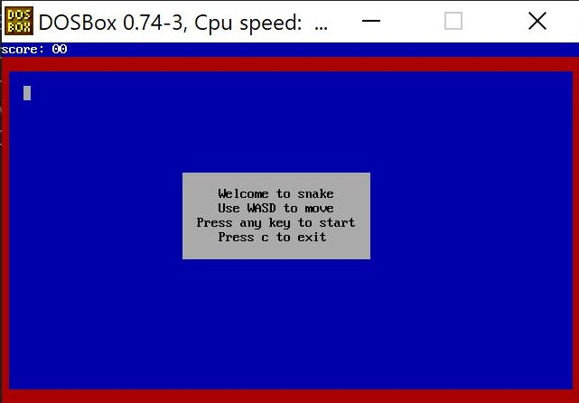
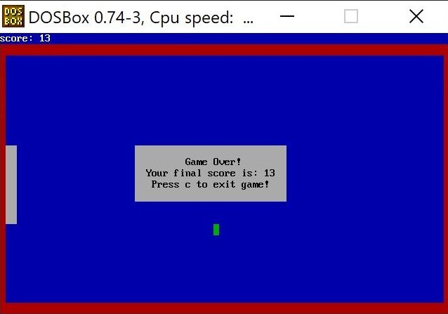

Portfolio
Currently: Advent of Code 2022
github repository
- Participating in
advent of code
- Daily coding puzzles released at midnight
- Coding in python
Lichess Social Network Analysis
full research paper |
project repository
- Open ended research project analyzing the social network structure of online chess website Lichess.com
- Evaluated efficacy of player-ranking system currently used by site
- Evaluated gameplay preferences and shared player behaviors
- Identified communities of high-associativity players indicating groups with shared gameplay behavior
- Identified players on long branches as being guilty of cheating and ranking-manipulation
- Proposed network analysis as means of more accurate identification of players misusing the platform
- Utilized python (including networkx package) for network analysis. Utilized Cytoscape and gephi for network visualizations.
 
Entire Lichess.org player social network, with edges colored by game type, and
nodes colored by player community.

Entire Lichess.org player social network, with edges colored by game type, and
nodes colored by player community.
Dendrochronologial Smoothing Spline Research
research poster |
full paper
- Developed alternative technique for fitting smoothing splines to tree-ring width data for climate analysis
- Improved upon the Cook & Peters 1981 method
- Created new method with same accuracy that is more computationally efficient, mathematically meaningful, and accessible to non-mathematicians
- Compared new methods with original method found in dendrochronologists' dplR R package
- New method eliminates use of the Fourier transform in computation
- Compared methods on data from approximately 2,000 trees' data to test and confirm accuracy and computational efficiency

Best and Worst Case fits of our method compared to the Cook & Peters Method
Assembly Arcade
github repository
- Project Repository on github
- Coded interactive snake arcade game in x86 assembly language
- Game displayed with memory mapped IO
- tracks players' scores and registers end-of-game moves consistent with the rules of the classic arcade game.
- Player's moves are registered with interruptions

